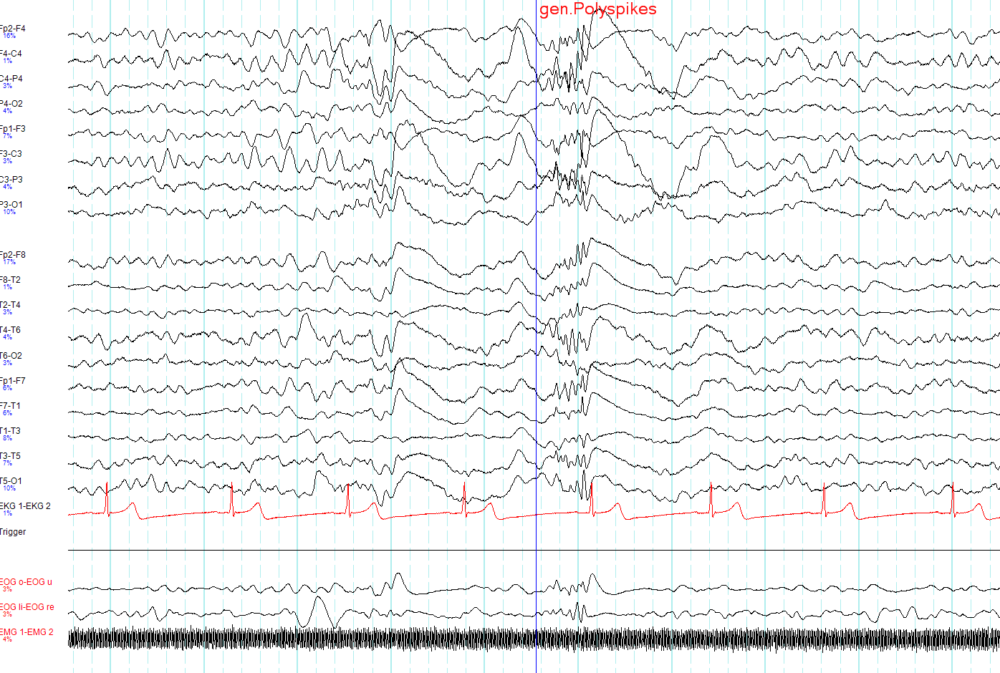

Comparação chocante · Pág. 06 de 07
Generalizada: grupamentos bilaterais, não cérebro 100%
Generalizada = 100% dos neurônios ao mesmo tempo?
Não. Focal = um grupamento. Generalizada = grupamentos bilaterais — não o cérebro inteiro. Literalizar o nome é o erro que gera SVG errado e conceito errado.
Definição: início nos dois lados
Generalizada = crise que se inicia nos dois hemisférios (dois lados do cérebro).
O mito do cérebro 100%
Conceito errôneo comum: achar que nos dois lados todos os neurônios trabalham ao mesmo tempo — “cérebro 100% funcionante”.
Não é assim: na focal, há grupamento em um lado; na generalizada, há grupamentos bilaterais — não o cérebro todo.
Os grupamentos bilaterais tipicamente envolvem motricidade e circuito de sono-vigília. Ou seja: motor com perda da consciência (padrão de ativação). Vias envolvidas: via motora e via da vigília.
Consciência na generalizada
Na generalizada não se classifica “com ou sem perda de consciência” como se faz na focal: parte-se do princípio de que há perda de consciência.
Há exceções (“exceção é regra”), mas não há o par formal “generalizada com / sem perda” neste eixo — é simplesmente generalizada.
Box lateral · digressão [068]
A fórmula “exceção é regra” é ênfase de nuance, sem lista de exceções neste recorte — não expandir inventário.
Fenótipos: só nomes (exceto TCG)
A apresentação clínica da generalizada se organiza pela motricidade/abalos.
Fenótipos generalizados a organizar (lista de nomes no recorte): mioclônica · tônico-clônica · atônica · ausência.
Destes, desenvolve-se a tônico-clônica generalizada; mioclônica, atônica e ausência ficam só como nomes no recorte — clínica completa na espinha de classificação/fenótipos (ponte de plataforma A7).

Grid de fenótipos generalizados
Mioclônica
nome apenas → ponte A7
Tônico-clônica
desenvolvida (P7)
Atônica
nome apenas → ponte A7
Ausência
nome apenas → ponte A7
Não confunda
- Generalizada ≠ “todos os neurônios”.
- Lista de nomes ≠ autorização para inventar EEG 3 Hz / clínica de ausência aqui.
Revisão ativa
- O que são “grupamentos bilaterais”?
- Por que não se usa o eixo consciência formal na generalizada neste recorte?
- Quais fenótipos ficam só no nome?
Quiz
Conexão
A TCG é a crise que “chama para atender” — e tem história natural em fases.